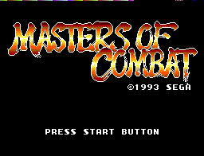
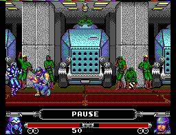
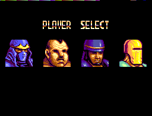

Master System - Masters of Combat
 :::. Por B-Mark
:::. Por B-Mark

Ano: 1993
Produtora: Sega
Plataformas: Master System e Game Gear
O Master System é um videogame que possui poucos jogos de luta 1x1
devido às suas limitações gráficas e geralmente pelos títulos deste
gênero não ficarem bons num sistema de 8 bits. Na minha opinião acho Masters of Combat o melhor destes títulos para o console.
Por ser um jogo original para o Master System, ele foi produzido
respeitando as limitações do console que são inferiores a um sistema de
16 bits e não é uma conversão de um game que saiu para Arcades como
Street Fighter e Mortal Kombat. Seus gráficos são bons para os padrões do Master System e ele conta até
com fase de bônus onde você tem que arrebentar uma empilhadeira. Esta fase de bônus lembra a do SF2 onde você tem que destruir um carro.
O ponto fraco deste jogo são
os sons e ele usa um dos botões para pulo, meio incomum nos
jogos de luta, já que na maioria dos jogos do
gênero o direcional para cima serve para realizar este
movimento. Além disso outra diferença neste jogo é que as barras de energia dos
lutadores ficam na parte inferior da tela como em Fighting Masters do
Mega Drive.
O enredo
A história de Masters of Combat se passa em Megalo City e gira em torno de um meteoro que caiu nas proximidades da cidade. Um grupo foi mandado para investigar, mas eles encontram um misterioso alienígena. Um ano depois, o prefeito da cidade resolveu organizar um torneio de artes marciais reunindo os lutadores mais forte de Megalo City. Porém, o prefeito criou este torneio com um misterioso objetivo. Qual será?
Lutadores: Masters of Combat tem somente 4 lutadores e 1 chefe devido às limitações do console já falada no início.
|  |
| Na ordem, os lutadores: Hayate, Gonzales, Highvoltman e Wingberger. O chefão é o The Alien (muito feio para aparecer na foto) |
Masters of Combat também
dispõe de uma versão para o Game Gear que no Japão
é conhecido como Buster Fight.
Acesse o Trombone e comente sobre essa matéria!


Um dos erros mais imperdoáveis da Sega. Em 90/91 mais ou menos, a Sega ganhou da Tecmo a oportunidade de fazer umas versões do Ninja Gaiden para os seus consoles. Essa chance é comparável ao que Deus fez quando deu o mundo para Adão... bem, o final tanto de Adão quanto da Sega nesse caso são semelhantes.
Albert Odyssey é um dos jogos mais amados pelos fãs do Saturn. Com uma história simples mas rica, dramatica e emocionante, encantou muita gente que naquele inicio da era 32 bits, ainda não estava acostumada com trilha sonora feita com instrumentos de verdade e gráficos cheios de luz e efeitos. Mas, não era para ser assim com esse jogo...